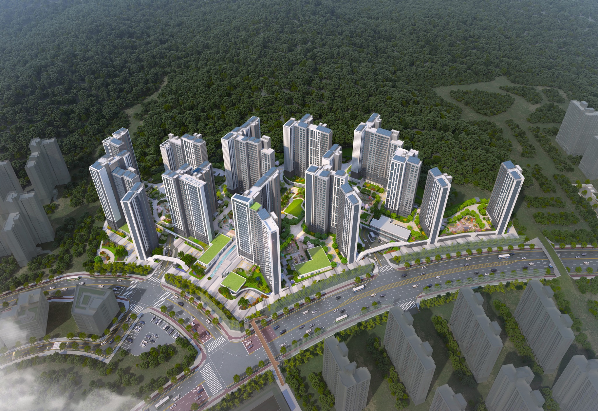

CYBER WALK
역곡지구
하우스토리
우리가 살아갈 단지를
미리 둘러봅니다.
EXPLORE
EXPLORE MAP
단지 전체보기
배치도의 포인트를 눌러 단지 곳곳을 살펴보세요.
포인트를 눌러 장소를 선택해보세요.
중앙정원
CENTRAL GARDEN
VIRTUAL WALK · 01
중앙정원을 걷다
단지 배치도를 바탕으로 구성한 첫 번째 가상 산책 장면입니다.
←
화면을 좌우로 움직여보세요
→